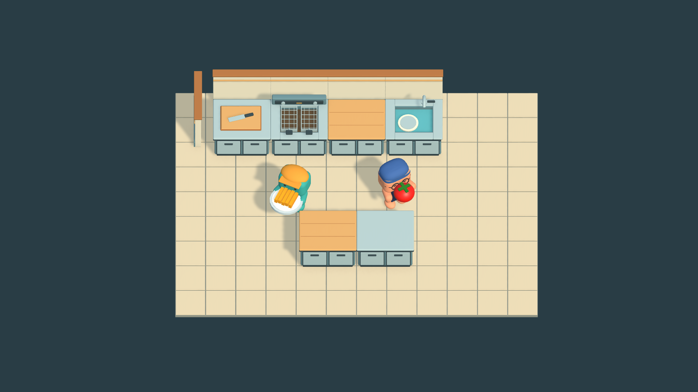
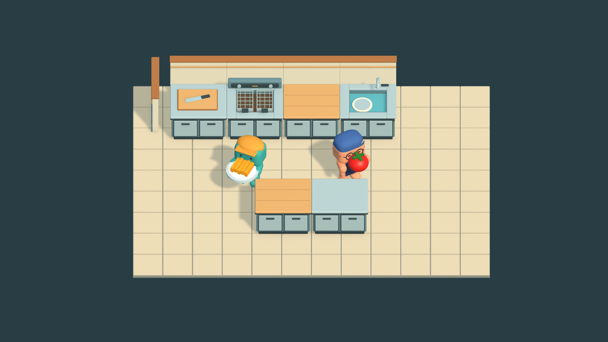
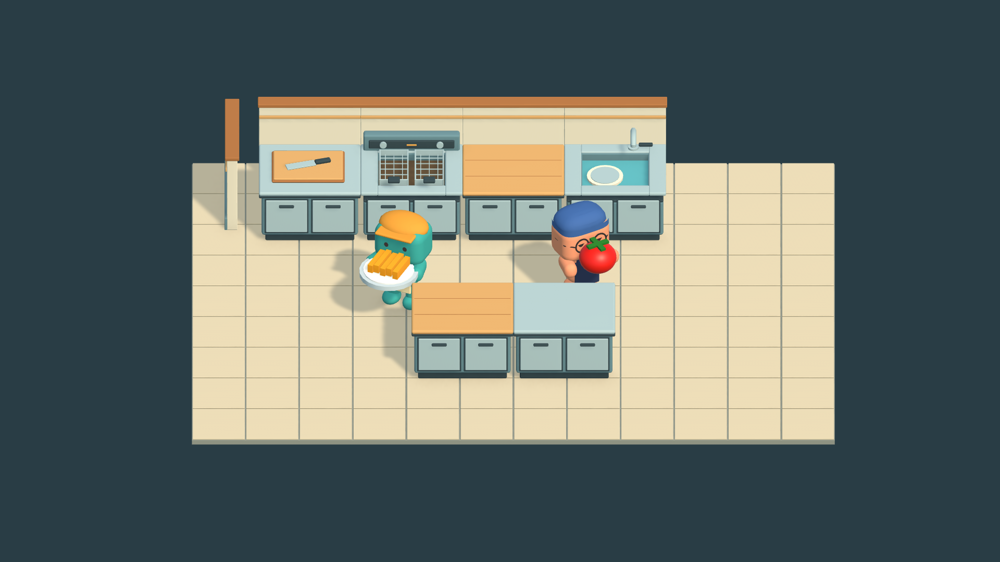

Thrown Together — Camera comparison
Same kitchen. Three camera treatments.
VisualDirectionTest • 1920 × 1080 • Orthographic throughout • Existing assets, lighting and character scale
Recommendation: B — 45°. More visible faces and cabinet fronts, with less worktop occlusion than C. Production camera unchanged.
Normal framing. Select an image to inspect the full-resolution PNG.
A — Current baseline
55° down • Size 6.5

Strong worktop overview. Faces and vertical panels are less visible.
B — Moderate angle
45° down • Size 5.75 • Recommended

Best balance of depth, identifiable food, faces and work surfaces.
C — Stronger angle
35° down • Size 5.25

Most dimensional. Foreground counters hide more of the chefs and floor.